Abstract
Transformers are slow at generating text. Each token must be fully generated before work starts on the next token. Diffusion models break this serial decoding bottleneck, but they are non-autoregressive latent-variable models. We propose PipeT, a pipelined architecture that remains autoregressive and simple to train. Tokens are decoded in parallel while attending to one another bidirectionally, as in diffusion, but token i+1 is slightly delayed with respect to token i, so it can depend autoregressively on token i and all previous tokens. This architecture decodes faster than a standard Transformer, reduces KV cache size, and is formally more expressive. Although pretraining and prompt prefilling are slower than in a standard Transformer, this tradeoff may be worth it when generation is a bottleneck, as when generating code or long reasoning traces during RL training or after deployment.
We evaluate models with 4M–200M parameters trained on the SlimPajama-6B subset using Chinchilla-style token budgets. At 100M parameters, a 3-layer PipeT matches the test loss of a 4-layer standard Transformer of the same size while decoding 1.8× faster with a 3.1× smaller KV cache. It nearly matches a 16-layer standard Transformer (the best depth we evaluated at this budget), with only 0.0228 bpb (1.86%) higher test loss, while decoding 4.4× faster with a 6.3× smaller KV cache.
How it works
Like a pipelined CPU, PipeT starts the next token before the current one is done: it computes layer 1 of token 9 together with layer 2 of token 8, layer 3 of token 7, and so on. To make this possible, token input and prediction move to intermediate layers. Each residual stream goes through four stages:
- Nascent: starts from a learned vector, before its token is known.
- Active: receives its token at ℓin and predicts the next token at ℓout.
- Committed: keeps refining itself using later tokens.
- Finalized: at layer L it stops and keeps a single KV pair.
Mixed-layer attention: each update attends to the highest available layer of every stream. No future token is visible when predicting, so training is ordinary teacher-forced next-token prediction.
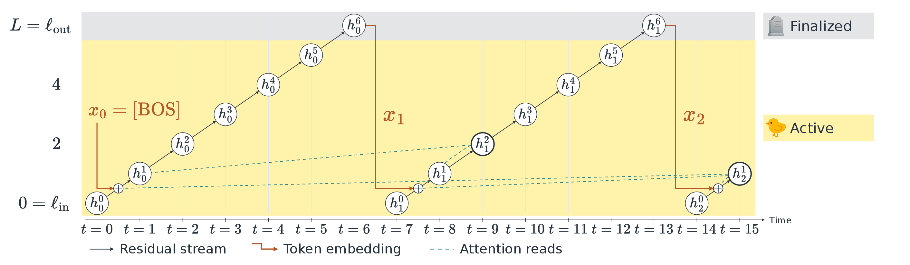
Faster decoding
L streams update in parallel against the same KV history, giving about L× higher arithmetic intensity.
Smaller KV cache
Each finished stream keeps one KV pair instead of one per layer: about L× less memory.
Recurrent expressivity
Streams can attend to earlier streams at the same layer, so computation depth grows with sequence length, as in an RNN.
The cost
Training and prefill can no longer parallelize over positions, only over layers, so they are slower.
Quality vs. efficiency
At each budget from 4M to 200M parameters, one PipeT model (★) is compared against a depth–width sweep of Transformer++ baselines (●). Lower and further left is better.
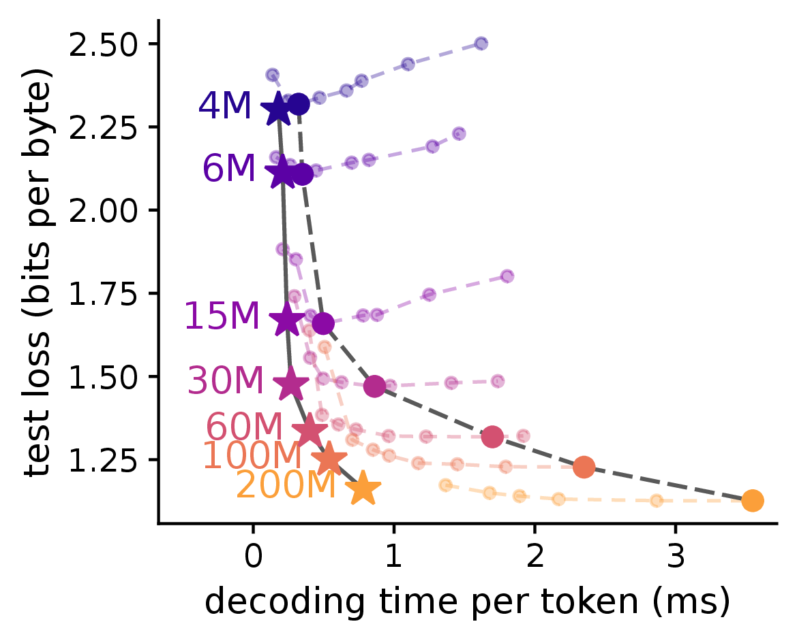
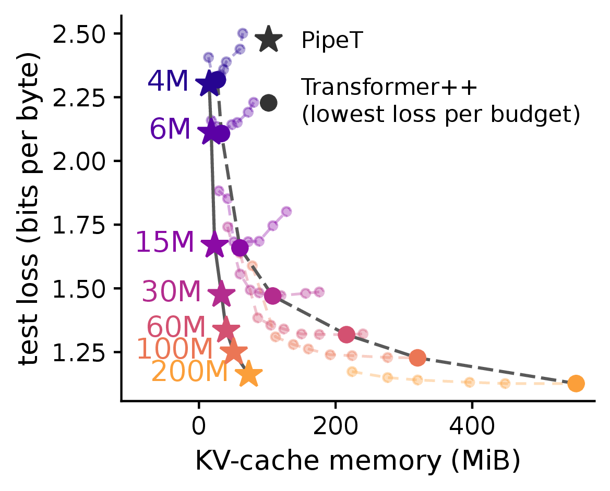
| Budget | vs. Transformer++ | Speedup | KV cache | Loss gap (bpb) |
|---|---|---|---|---|
| 100M | 4-layer (same loss) | 1.8× | 3.1× smaller | matched |
| 100M | 16-layer (best loss) | 4.4× | 6.3× smaller | +0.0228 (1.86%) |
| 200M | 24-layer (best loss) | 4.6× | 7.6× smaller | +0.0355 (3.15%) |
State tracking and recall
PipeT's recurrence lets it track the state of permutation word problems (S3, S5), where Transformer++ falls to chance, and it generalizes well beyond the training length (shaded). It also keeps Transformer-level associative recall (MQAR), where a GRU baseline collapses.
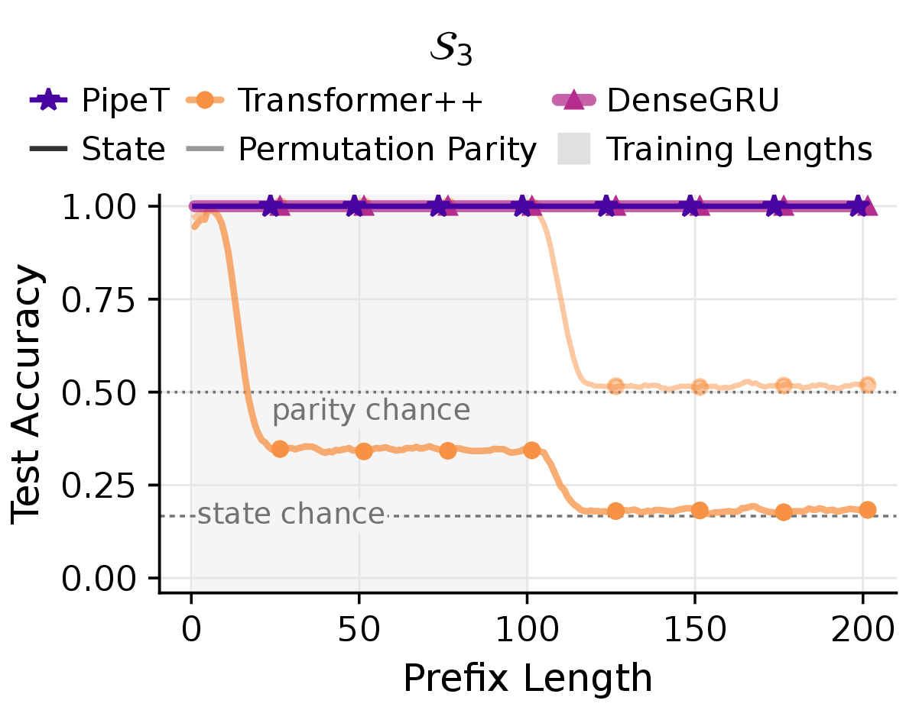
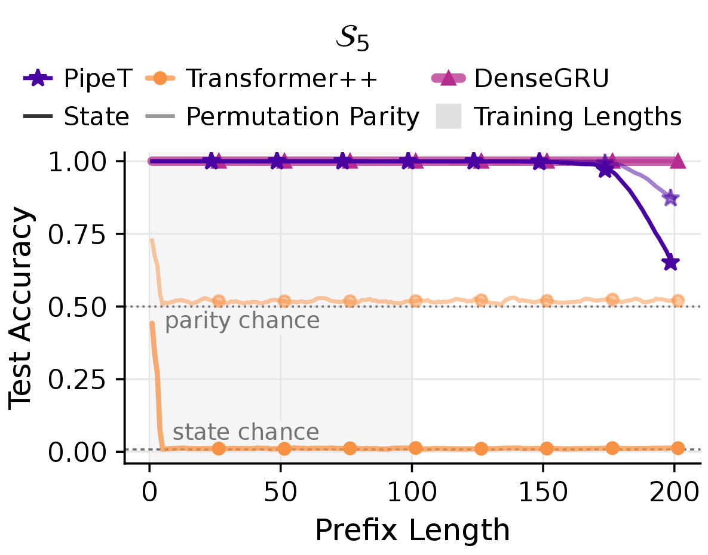
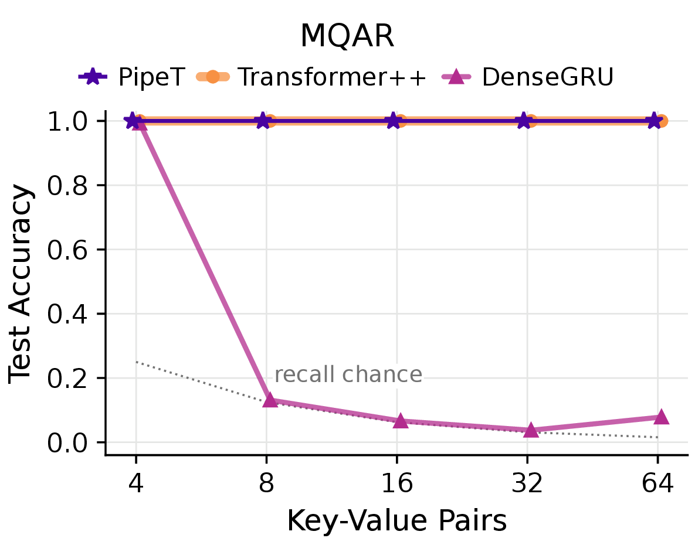
More results
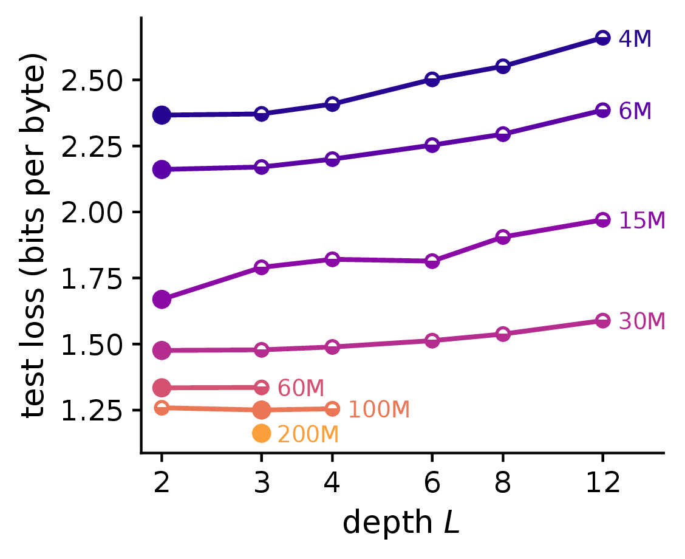
Architecture search favors shallow, wide PipeT models (L = 2–3).
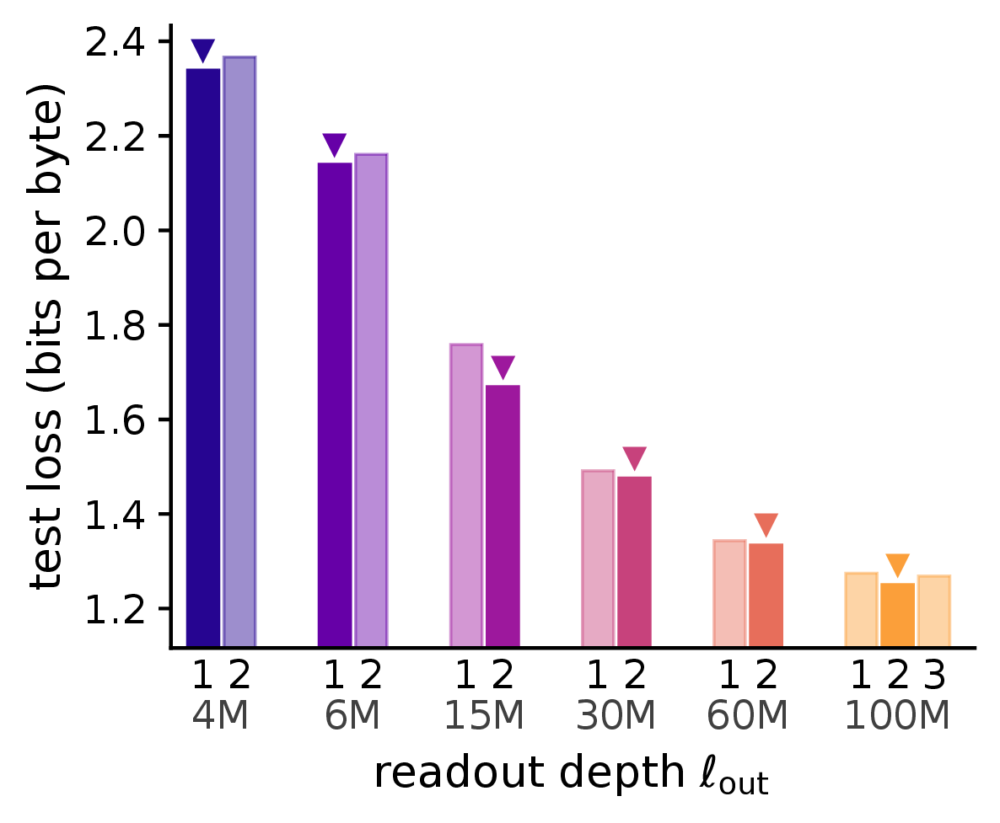
Sweep over input/output layer placement.
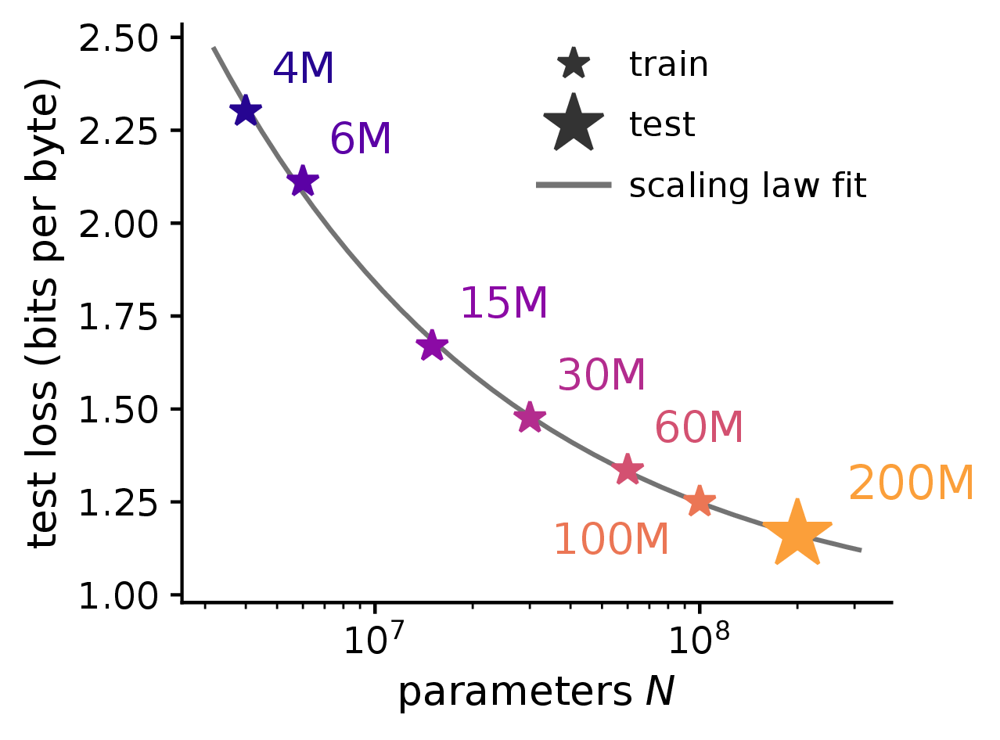
A power law fit on 4M–100M predicts the held-out 200M loss within 0.0002 bpb.
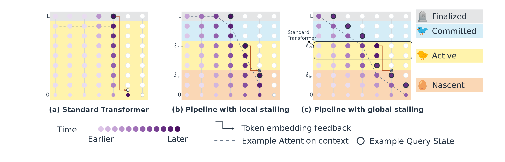
Stalling: a gap τ = ℓout − ℓin > 1 trades speed for sequential depth.
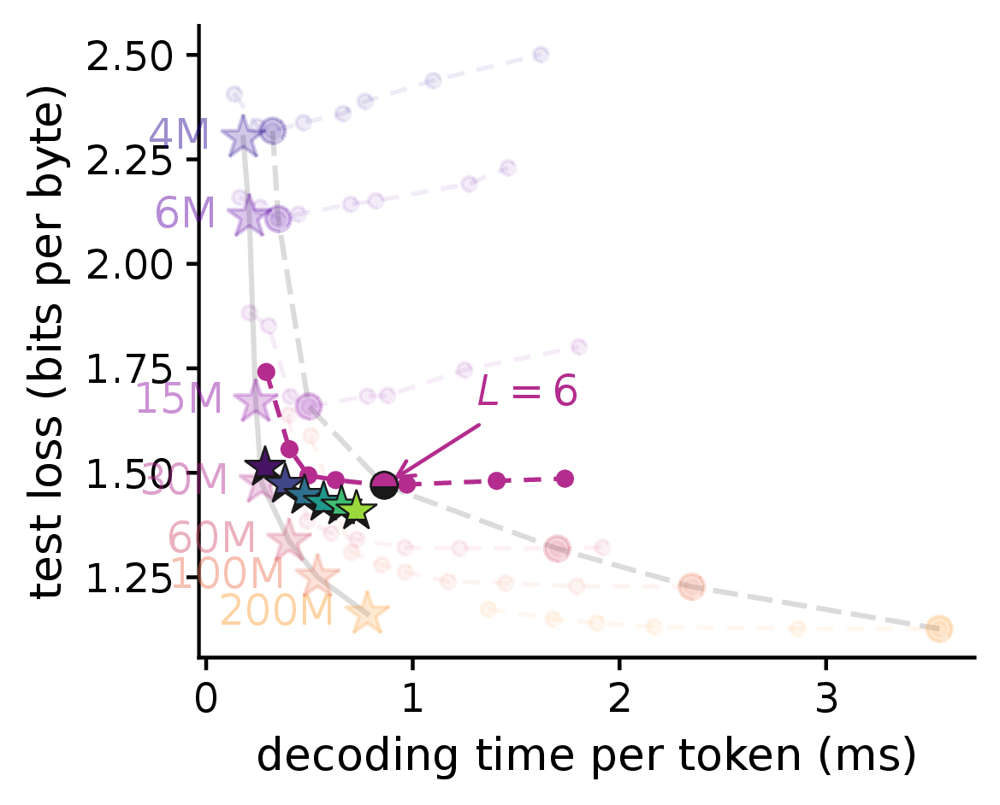
At 30M, τ = 3–5 beats the best Transformer on loss, speed, and memory.
Limitations
- Training is slower than a standard Transformer (3–10× in our unoptimized implementation).
- Evaluated only at 4M–200M parameters, on test loss; no downstream or free-running generation evaluation yet.
- The loss gap to the best Transformer grows from 100M to 200M.
BibTeX
@article{pipet2026,
title={Pipelined Transformers: Autoregressive Generation with Increased Parallelism},
author={Anonymous},
year={2026}
}